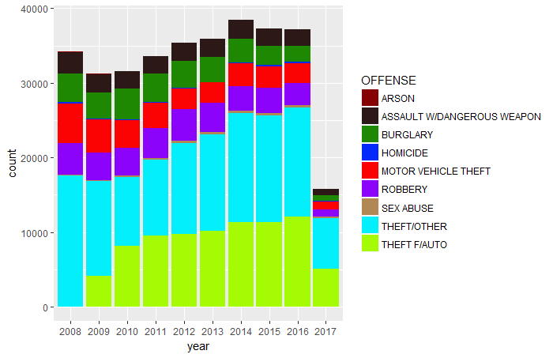
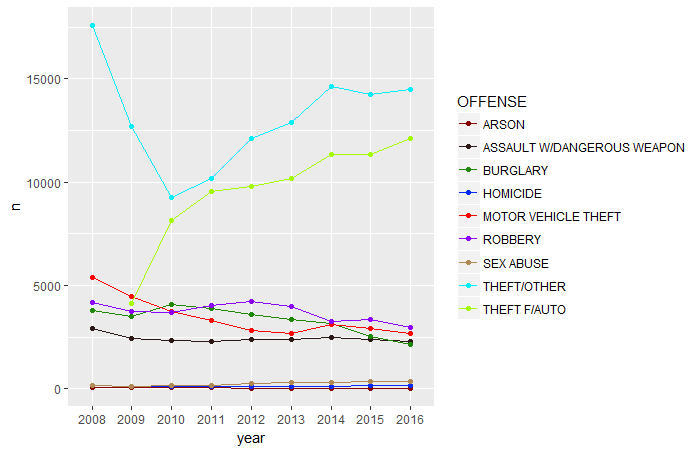

In 2008, the District of Columbia Metropolitan Police Department reported a total of 34,205 crime incidents and in 2016, 37,186 crime incidents were reported. The bar plot below also shows that the crime incidents have been increasing steadily since 2009 with a peak in 2014.
Count of crime incidents from 2008-2017

A closer look at the types of crimes that are contributing to the increase in number of crime incidents over the past 7 year revealed theft to be the main culprit. While there's a decline in the number of burglary, there are also slight increases in other crime types such as robbery and sex abuses. ( The graph also shows decreases in incidences of motor vehicle theft but auto theft is increasing since 2009)
Count of each crime type, 2008-2016
